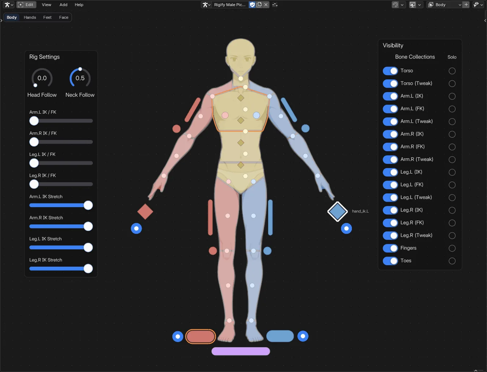
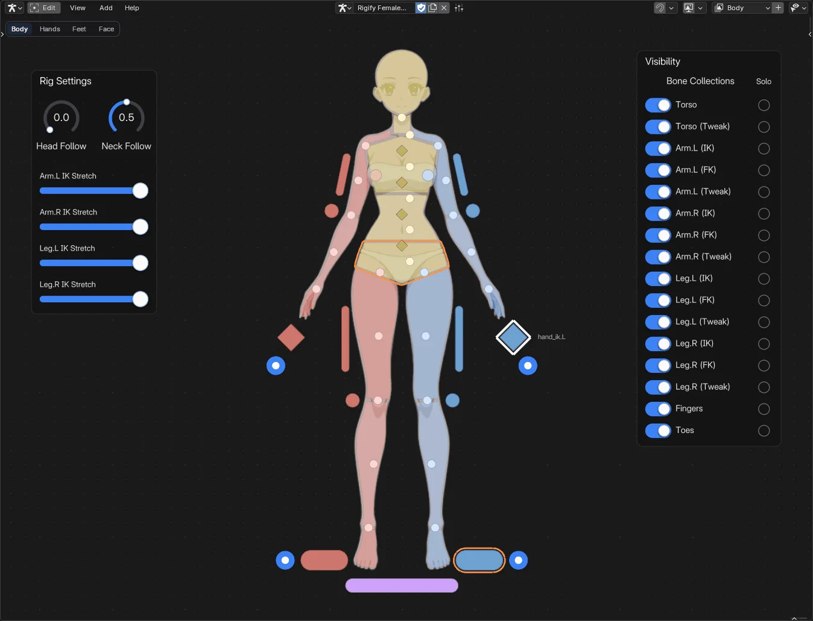
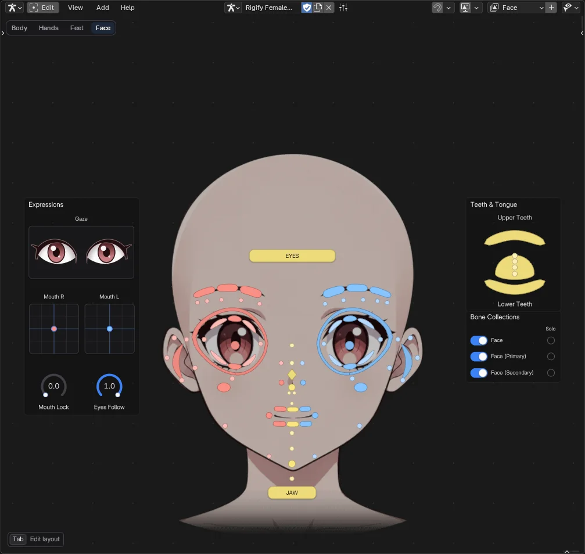
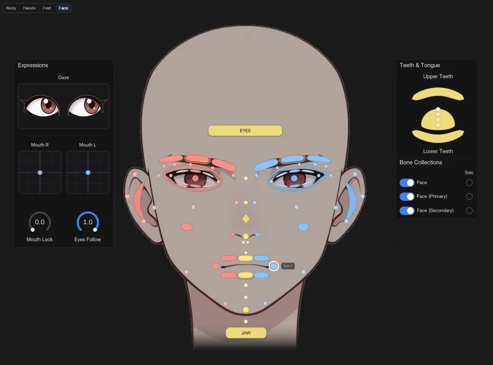
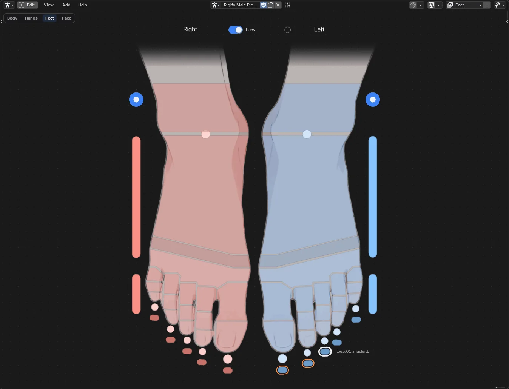
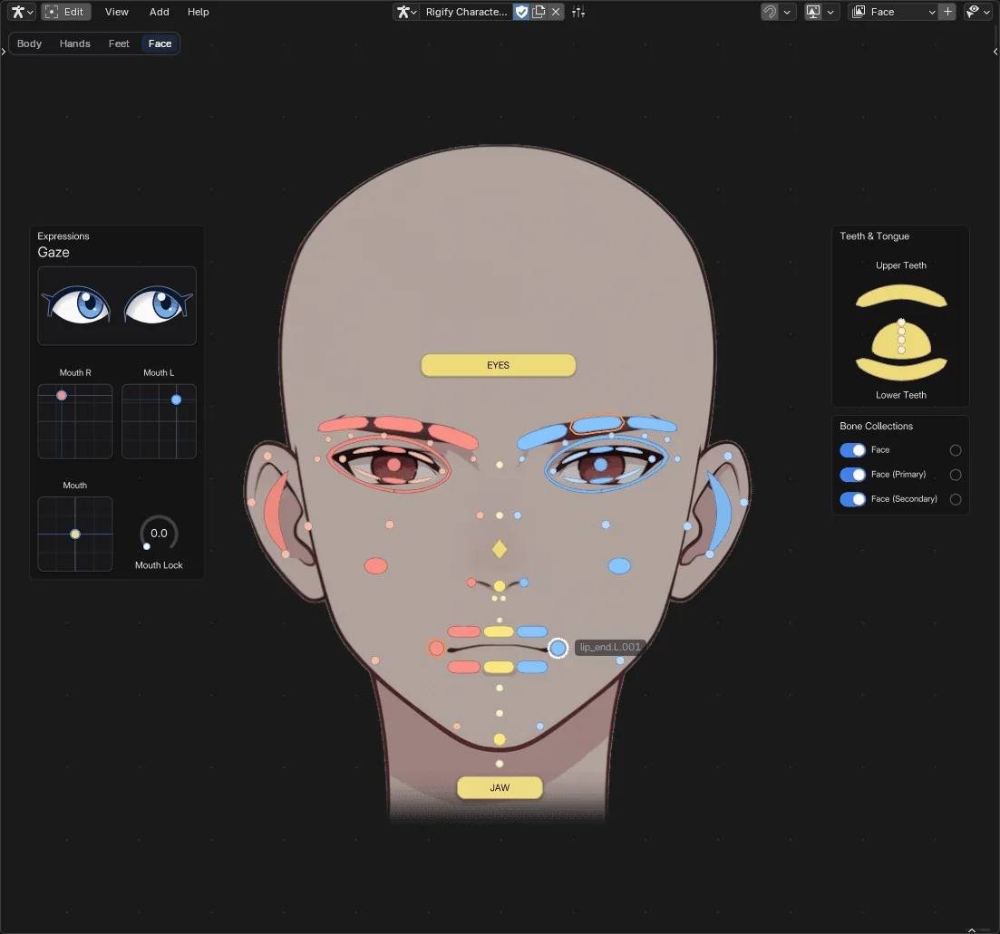

How to build a picker for a rig generated with Rigify. The same ideas work for any rig.
Quick start: Humanoid Body#
Want a full picker in one step?
- Select the generated rig.
- In the picker's Edit Mode, press Shift+A.
- Choose Bone Picker > Humanoid Body (Rigify).
The chart comes with its own character drawings: a male and a female body, both hands, both feet and a male and a female face. Every shape is traced from them, so each control sits on the right part of the drawing.


Screenshot- Body: Adult Male or Adult Female. Each has its own drawing, and the shapes follow it.
- Pages: Body, Hands, Feet and Face. Each one goes on its own page, with its own tab, or all four go on one page, one under the other, with Each on Its Own Page off. Either way every page is centred on the red centre line, so the left and right controls mirror each other and keep to their side.
- Body page: the body split into head, neck, chest, torso, hips, shoulders, arms, hands, legs and feet (the FK and torso controls), plus the IK hands and feet, the elbow and knee poles, the spine and the tweaks. The IK hand (diamond) and its IK/FK switch are past the fingertips, the IK feet beside the feet, the poles and the IK arm and thigh bars just outside the limbs. These markers are exact left/right mirror images, so editing them with mirror on moves both sides together.
- Hands page: both hands, large: the palm, every finger and thumb segment, the fingertips (past each fingertip, along the finger) and the finger masters (in a row past the fingertips, each under its finger; the thumb's past its tip). The wrist band is the FK hand, with the hand tweak (dot) on it. Next to it: the IK hand (pill) and its IK/FK switch.
- Feet page: both feet seen from above, large: heel, foot, ball (foot spin) and toe controls, every toe with its tip and master, and the FK foot and toe bars on the outer side.
- Face page (on by default): every control of Rigify's face on an anime face, the female face for Adult Female and the male face for Adult Male: lids, eye rings and pupils, brows, cheeks, nose, lips, jaw, ears, the EYES and JAW bars, and the teeth and tongue in their own frame. On the left, an Expressions panel: a Gaze pad drawn as two eyes in the face's eye colour, bound to the eye target (drag it and the eyes look there), a pad per mouth corner and the Mouth Lock and Eyes Follow knobs. On the right, the face bone collection toggles, each with a Solo button. See Bone collections below for what each shape is. It works with both Rigify faces: the classic one and the newer one that Upgrade Face Rig makes (
eye_common), where the few controls with other names (the eye masters, the mouth corners, the tongue) go to their bones there. A rig without a Rigify face gets no Face page, and a note says so. - Scale sets the size of the chart.
- IK/FK Switches: when on, each arm and leg gets a Rigify IK/FK puck of its own, right next to the IK hand or foot (never on top of it), so both are easy to click.
- Character Backdrop (on by default): puts each page's drawing behind it as a locked Backdrop Image, at the same scale as the shapes. The drawing is faded and half grey (75 % opacity, 50 % saturation, a light cool tint) and the body shapes are see-through over it, so you see the art and the colours at once. The face keeps more of its colour and its controls stay solid. Clicks go through the drawing to the controls. Change its look in its Image Look section, or delete it. Turn the option off for the shapes alone, solid.
- Hands Side: Back (the default) or Palm: the drawing of the Hands page, and the shapes follow it. The thumbs point inwards on the backs of the hands, outwards on the palms.


Screenshot

Screenshot

ScreenshotColours and views#
- Left is blue, right is red, the centre is yellow and the root is purple.
- The Body page is a front view: the character's left is on your right.
- Hands & Feet View sets the other two pages (their drawings turn with them):
- Front (the default): the same front view as the Body page. The right hand and foot are on the left, fingers and toes point down, wrists and heels are at the top.
- Own: as you see your own hands and feet. Left is on the left, fingers and toes point up. The left controls sit left of the centre line here, so on these two pages they move freely, with no mirror.
- Big toes point inwards in both views. Thumbs point inwards with the backs of the hands, outwards with the palms (Hands Side).
 Screenshot
Screenshot

ScreenshotMissing bones#
Each shape is bound to the bone of the same name. Bones your rig doesn't have are skipped, and a warning lists them. A page with none of its bones gets no tab.
Adding it again#
Add the chart to a picker that already has one and you get a second chart, on pages of its own named Body.001, Hands.001 and so on, and a warning says so. Undo removes it.
Toes for Rigify#
To get one control per toe, do this on the metarig before you generate:
- Add five toe chains to each foot. Name them
toe1.01.L(big toe) totoe5.03.L. The big toe has two bones, the others three. - Give the first bone of each chain the limbs.super_finger rig type. Rigify then makes a tip, a master and an FK control per segment.
- Put them in their own bone collection, for example "Toes".
The Rigify Male Body Picker and Rigify Female Body Picker demo files have toes made this way.
Use the shapes in your own picker#
The shapes are stored in the picker, so they travel with the .blend (the drawings too: they are packed). Any Geometry Shape of the same picker can use them:
- Add a Geometry Shape widget.
- Open its Custom Shape panel.
- Pick a shape under Canvas shapes.
- Set its bone, colour and size as usual.
You can also delete the shapes you don't need, or move them to make your own layout.
Demo files#
Two demos show the result: Rigify Male Body Picker and Rigify Female Body Picker. Each has a generated rig with toes and a Rigify face, the four pages over their drawings (the Face page over the male or the female face), the IK/FK puck beside each IK hand and foot, a Rig Settings frame with the head and neck follow knobs and the IK stretch sliders, and bone collection toggles. Open them from the demo list.
1. Use the generated rig#
Make the picker for the generated rig (the RIG-... object you animate), not for the metarig.
- Select it and enter Pose Mode.
- Set an area to Armature Picker.
- Click New Picker.
2. Import the controls#
- In the 3D Viewport, select the controls you want buttons for: the torso, hips, chest and head controls, the hand and foot IK controls, the FK controls, the fingers...
- Click Import Selected Bones on the card (or Utils > Import Selected Bones in Edit Mode).
- Click to place each button. Left and right controls come in pairs.
3. Mirror#
Rigify names its controls with .L and .R, so the picker pairs them. In Edit Mode, move, resize or rotate the left button and the right one follows, mirrored across the red centre line. Centre controls (torso, chest, head) stay on the line. The right button gets the same change as the left one, mirrored, from where it is, so a pair that is not an exact mirror image (the fingers and palms of the Hands page) keeps its shape and never jumps.
4. The IK/FK puck#
Rigify limbs switch between IK and FK with an IK_FK property (0 is IK, 1 is FK) on the limb's ..._parent control. A bone picker can show a small puck that flips it:
- In Edit Mode, select the button of a limb control, for example
hand_ik.Lorupper_arm_fk.L. - In the sidebar Widget tab, find the IK/FK row and click the armature button at its end (Rigify IK/FK).
- FlexSpace reads the rig's drivers to find the right limb and sets everything: the Data Path (
pose.) and IK Value: Min. If it can't tell the limb, it lists every bone with anbones["upper_arm_parent. L"]["IK_FK"] IK_FKproperty, the same side first.
In Pose Mode, click the puck to switch. The puck:
- shows the current state,
- follows the property when you change it elsewhere,
- is keyed when Auto Keying is on,
- makes every click one undo step.
Snap (on by default) keeps the limb's pose when you switch, as Rigify's own IK->FK and FK->IK buttons do:
- To FK: the FK controls move to where the IK arm or leg is.
- To IK: the IK hand or foot goes where the FK hand or foot is, and the arm turns (the IK arm's own twist, or the elbow or knee pole with Pole Vector on) to keep the elbow or knee in place. The toe follows too.
- With Auto Keying on, the controls it moves are keyed together with the switch, in the same undo step.
Going to FK is exact. Going to IK, Rigify's IK chain stretches a little and changes the lengths of the upper and lower bone by different amounts, so the elbow or knee can't always land exactly where it was. The snap gets as close as Rigify's IK controls allow, and the gap grows with the bend. On a human-sized rig, with the bend measured as the angle between the upper and lower bone, the elbow lands within half a millimetre up to about 80 degrees, about 1 mm at 110 degrees, 2 mm at 135 and about 3 mm at 150 to 160. The knee is about 1 mm off at 50 degrees, 2.5 mm at a right angle and 4 to 6 mm at 125 to 150 degrees. Rigify's own snap leaves the same or more on the same pose. Folded almost flat (the hand on the shoulder), the limb is past what Rigify's IK chain can bend, so no snap can reach it. A twist of the FK forearm or shin along its length can't be kept in IK.
Snap works on Rigify arms and legs (human-like limbs). The paw limbs of Rigify's quadruped rigs (Wolf, Cat, Horse, Basic Quadruped) switch without snapping, and the Snap option is greyed out for them. Turn Snap off in the IK/FK settings to switch without moving any control.
Toggle Size sets its size.
5. Bone collections#
Rigify sorts its controls into bone collections (Torso, Arm.L (IK), Arm.L (FK), Fingers...). Add a toggle for each one you show and hide often:
- In Edit Mode, press Shift+A > Bone Picker > Bone Collection.
- Pick the collection and place it.
- Choose Visible, Solo or Select (a click selects all its bones, Shift adds them) in its Bone Collection panel.
With Sync Bone Collections Visibility on (sidebar, Armature tab), the buttons of hidden collections hide too, so the picker matches the viewport.


ScreenshotThe Face page of Humanoid Body (Rigify) (and the Face page of the Rigify Human Picker demo) is a good start for your own face picker. Every face control of Rigify's human sits on the drawn feature of a face picture, coloured by side (left blue, right red, centre yellow):
- Eyes: a ring around each eye moves the whole eye (
master_eye), a dot on the pupil aims it (eye), almond segments on the lash lines move the lids, and the EYES bar on the forehead moves the common eye target. - Brows: three arched strips on each brow, and a row of dots under it.
- Nose, cheeks, lips and jaw: the nose master is the diamond on the bridge, the lips are arcs above and below the mouth line with a dot at each corner, the JAW bar is under the chin.
- Teeth & Tongue: the open mouth in its own frame, the upper and lower teeth and the tongue with its chain.
- Expressions: a Gaze (Eyes) pad bound to the eye target, a pad per mouth corner, and knobs for Mouth Lock and Eyes Follow.
The face picture is a locked Backdrop Image, so clicks go through it to the controls. The lighter controls are the finer ones of the Face (Secondary) collection, the darker ones are masters.
6. Sliders for custom properties#
Rigify puts many settings on its controls as custom properties (IK stretch, follow, FK limb follow...). To bind a slider to one:
- Add Data > Numbers > Lineal.
- Click the eyedropper next to Data Path.
- Right-click the property in the 3D Viewport sidebar (Item tab, Rig Main Properties, or the bone's Custom Properties).
The rig follows while you drag: the drivers that read the property update as it changes. Knobs, Number Fields and Enums bound to custom properties work the same way.
Repair bindings#
Buttons remember their bone by name and by a hidden bone id, so they follow renamed bones. If you regenerate the rig, change bone names in the metarig, or paste buttons from another picker:
- Open the picker in Edit Mode and run Utils > Repair Bone Bindings. It follows renamed bones, binds buttons by bone name, and reports the bones still missing.
- Bone Collection toggles follow renamed collections by themselves (see Armature Picker > Bone collections). Regenerating makes Rigify's collections again without their ids: a toggle finds the new collection by its name and gives it the id again. If the name changed too (you renamed it in the metarig), Repair Bone Bindings binds the toggle to the collection that holds most of the bones it had (or the one with a close name, or the only collection without a toggle). The others are listed, to pick in their Bone Collection panel.
- Buttons pasted into the picker of another rig are bound there by bone name right away.
- Buttons with a Missing bone badge need a new bone: pick it in the Bone field.
- If the picker shows Not the picker of ... after regenerating, click Use it for ... on the card to give it back to the rig.